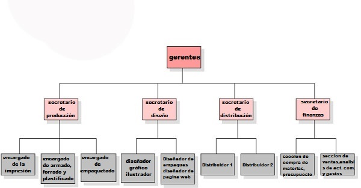
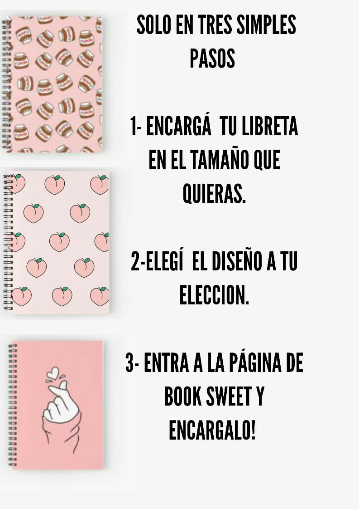
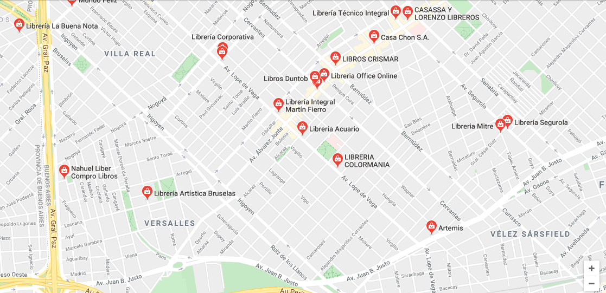
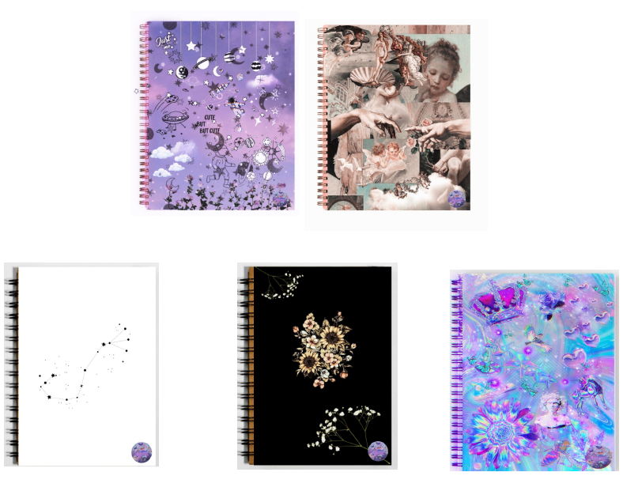

✩Book Sweet es un proyecto empresarial que se especializa en hacer
cuadernos, agendas, libretas personalizadas con material orgánico. Todas las
agendas se diseñan a partir del gusto del consumidor, la persona que desea
comprar trae su diseño elegido con imágenes. A partir de aquel diseño elegido, ya
se podrá pasar a la segunda etapa de elaboración de la agenda o cuaderno.
¿Qué queremos conseguir?
✩Nuestra empresa quiere brindar a los clientes confianza ya que trabajamos para
ser reconocidas y es por eso que nos preocupamos en dar a conocer, en distribuir y
en vender nuestras libretas, cuadernos y/o agendas a diferentes puntos de venta.
Esta empresa presenta una propuesta de innovación para las personas, a su gusto
y que queden satisfechos.
¿Cuáles son nuestras metas?:
✩Obtener en un mes 45 ventas de libretas.
✩Contratar a empleados para los distintos sectores: fabricación, planeación, organización,
distribución de los productos. Con esto logramos tener mucho más control sobre lo producido.
✩Maximizar las entregas y adelantar el tiempo de entrega a dos días (antes de una semana).
✩Conseguir precios bajos de las maquinarias necesarias.
Organigrama:

¿Cómo medimos el proceso de control en Book sweet?
Lo que tenemos en cuenta para medir el proceso de control son los siguientes ítems:
✩Medimos el desempeño de nuestros empleados.
✩Comparamos el desempeño que obtienen (el cual es el estándar) y con la comprobación de
las diferencias que existen.
✩Corregimos las situaciones desfavorables para la organización, aplicando las medidas
necesarias correspondientes de la MEDICIÓN DE DESEMPEÑO.
✩Medimos la ejecución y los resultados mediante una aplicación de unidades de medidas,
siempre teniendo en cuenta a lo establecido con los estándares de nuestra organización.
✩Comparamos también el desempeño con el estándar que es cuando hay una diferencia entre
estos dos y por lo general necesitamos ciertos criterios para evaluar el significado de dicho
comportamiento.
✩Corregimos las desviaciones con la ideología de que las operaciones estén ajustadas y que se
logran esfuerzos para alcanzar todo lo deseado en esta empresa (objetivos, metas,etc).
✩Para este último: la corrección además va acompañada de una responsabilidad fija e
individual. Descubrir esas dificultades y corregirlas a tiempo.
Ejecución:
✩Motivación: siempre tenemos en cuenta la motivación de nuestros empleados y secretarios
para que puedan lograr el máximo rendimiento. Su creatividad es muy importante ya que es la
base de book sweet.
✩Guía o conducción de los esfuerzos de los subordinados: llevamos el control de cada
empleado y los recompensamos por sus logros dentro de esta comunidad.
✩Comunicación: tratamos de haya una buena comunicación entre nuestros colegas y
empleados para lograr vínculosfuertes y duraderos y así poder establecer las bases de book
sweet.
✩Supervisión: supervisamos todas las acciones dentro de book sweet. Desde la entrada de la
materia prima hasta la salida del producto terminado. Registramos todas las ventas y compras
para lograr una organización mayor.
✩Alcanzar las metas de la organización: este punto es muy importante para nosotras
ya que mediante el cumpliento de cada meta y de cada objetivo estamos aun paso más del
mercado internacional, de nuevas tecnologías, de nuevos conocimientos y experiencias las
cuales avanzan en el desarrollo de book sweet, para que el dia de mañana seamos una empresa
internacional y poder llegar a todas las partes del mundo, satisfaciendo la demanda del
mercado.
✩planes desarrollados y planeados desde el comienzo de esta organización, esto se debe a una
mayor organización para lograr nuestro cometido ya antes mencionado.
✩Conclusión de dirección y ejecución : La dirección que poseemos siempre está
en busca de la obtención de los mejores resultados, la atención al cliente y/o consumidor, la
buena comunicación, supervisión de todos los empleados y secretarios, responsabilizarnos sobre
todo en nuestros presupuestos y programas, estrategias, etc.
Conclusión:
✩Con respecto a la Constitución de una empresa se puede decir que son varios
pasos los que una persona natural o jurídica debe seguir para constituirla de
manera legal.
✩Una empresa operando en forma organizada, combina la técnica y los recursos
para elaborar productos o prestar servicios con el objeto de colocarlos en el
mercado para obtener una ganancia.
✩En conclusión la empresa se basa en los recursos económicos que tenga para
implementar la misma, así como tiene que estar acorde de los avances del
momento, para así iniciar un mejor desarrollo empresarial y así tomar un mejor
manejo y rapidez en las diferentes fuentes de ingreso.
✩Para concluir este concepto de proceso administrativo, es muy importante
recordar que es uno de los métodos más importantes para llevar a cabo los
procesos que son planeación, organización, dirección y control ya que de acuerdo a
su orden se lleva una excelente administración. Podemos reflejarnos en una
empresa que tenga éxito, tanto en lo personal desarrollamos habilidades en saber
llevar un proceso en nuestra vida diaria y tener un mejor futuro.
Infografía:

Nuestra ubicación:

Aqui podemos ver las ubicaciones de nuestros locales/los lugares donde se vende nuestra mercadería.
Tabla:
Departamento
Area
Supervisor
secretaria de produccion
encargado de la impresion y el empaquetado
Luis Torres
secretaria de diseño
diseñador de productos
Agustín Cattaneo
secretaria de distribucion
Distribuidores
Tamara Soleir
secretaria de finanzas
encargado de presupuesto
Luis Torres
¡Mira nuestros videos explicativos y contactanos!
Aqui algunos de los modelos que fabricamos:

Puntos que quizas te interesen:
✩Queremos convertirnos en la mayor empresa de cuadernos personalizados más grande de todo el
mundo, contando con nuestros recursos orgánicos sin dañar al medio ambiente.
✩Ofrecer a todo el público (llegando a todas las edades), que puedan disfrutar de los
servicios que damos con los precios accesibles.
✩Lograr abrir locales en diferentes lugares del país y llegar al mercado internacional,
mejorar la producción implementando nuevos materiales orgánicos para cuidar el medio ambiente.
✩Publicidad a través de las redes sociales.
✩Poder contactarnos con personas conocidas o influencers de las redes, logrando la expansión
del negocio.
✩Realizar sorteos, ofertas y cupones promocionales para aumentar las ventas.
✩Ser innovadores y creativos en el mercado para lograr productos únicos.
✩Actualmente contamos con 15.467 empleados.
Abajo se adjuntará una imagen con la explicación detallada de lo que se busca para el proceso
de control en Book Sweet: